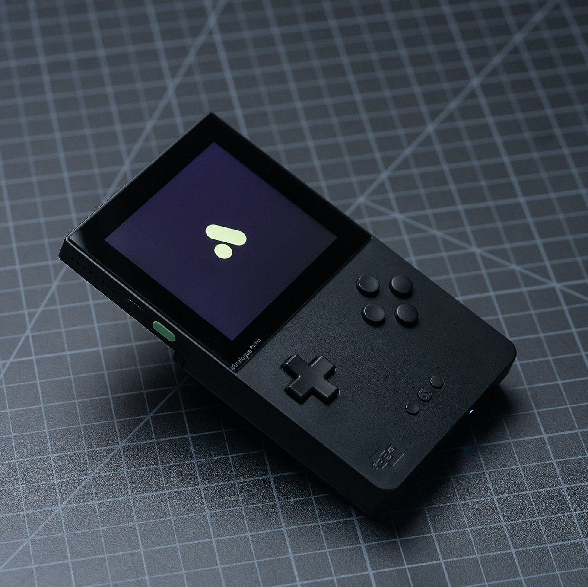

Main Story
FPGA vs. Software Emulation: Which is right for you?
We do a deep dive into the differences between FPGA and software emulation, and maybe you'll walk away with the right knowledge for your next console purchase. Read More
The legal (and moral) case for emulation
Currently, emulation stands at a very delicate place in the legal system. Should we have moral and legal qualms about it? Read More

What you need to know about the upcoming AYN Odin 2
The Odin 2 is the latest handheld from AYN, capable of emulating some of the latest consoles at an affordable price. Read More
Can Intel keep up in the GPU market?
Intel's new Arc A770 is a success on paper, but issues with drivers and DirectX may be holding it back. Read More
How to set up your streaming rig
Getting into streaming for the first time? It might not be the best to copy your favorite streamer's setup. Our guide will cover everything you need. Read More

Razer Viper Mini Review: Value in a small package
The Viper Mini packs all of the features and performance of a full-sized mouse in a small form factor. Read More
Elgato Stream Deck Mk.2 Review: It does everything!
The Elgato Stream Deck Mk.2 is the perfect streamer companion, whether you're a small time streamer or in the big leagues. Read More